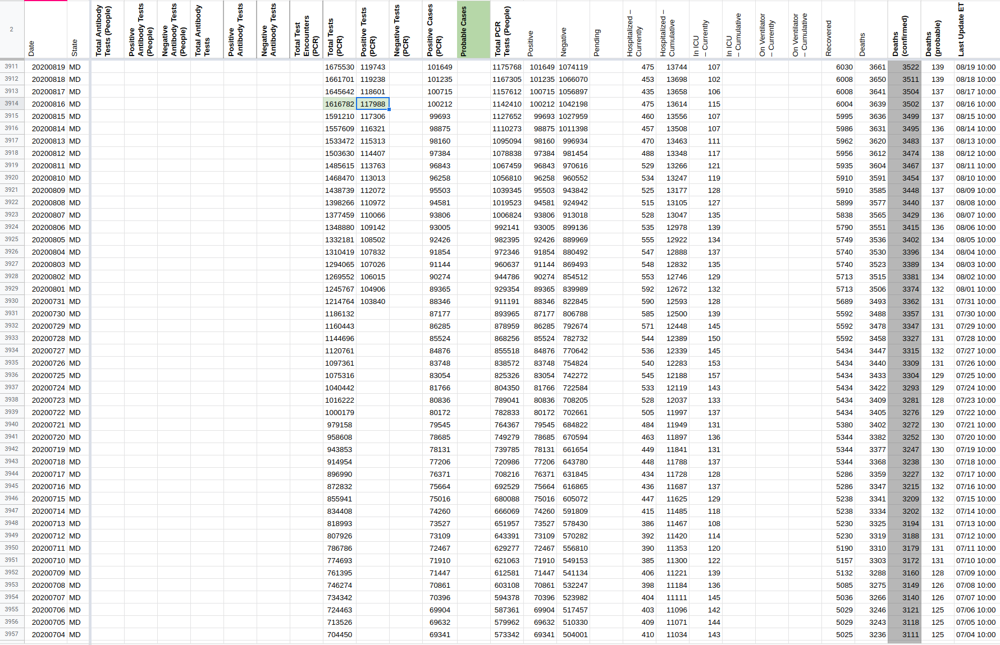
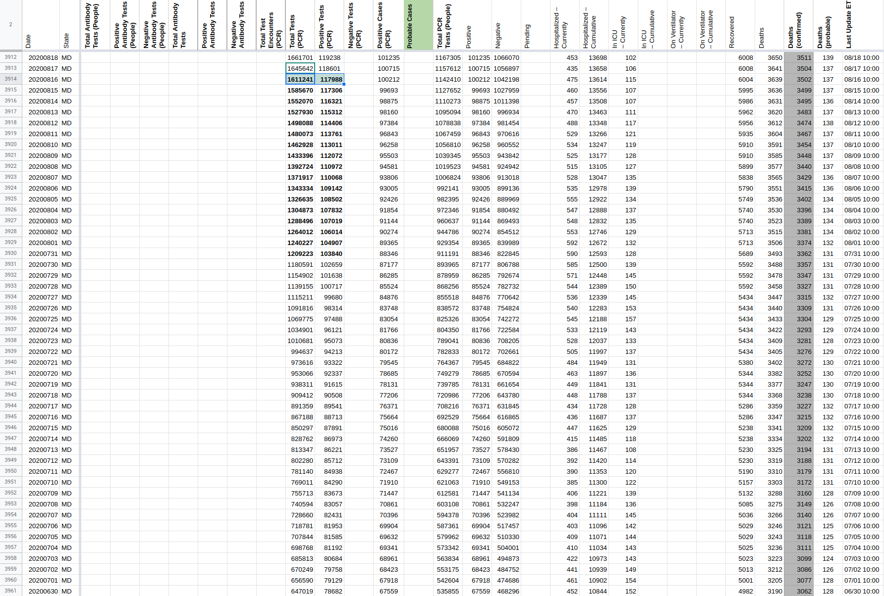
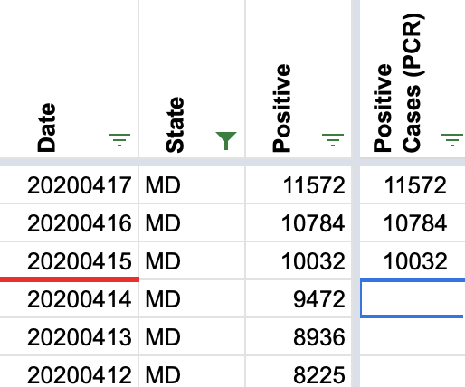
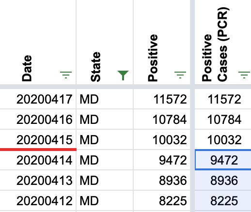
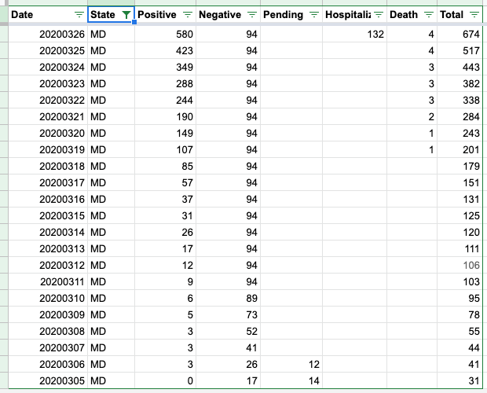
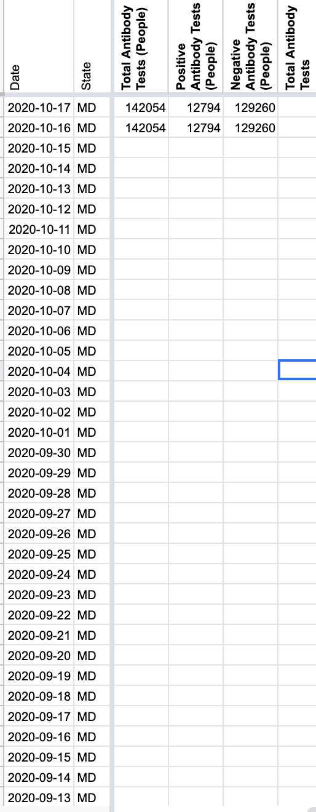
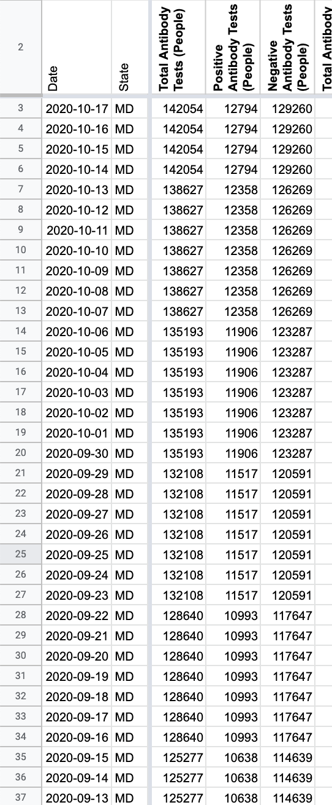

| Date | Number | Title |
|---|---|---|
| October 17, 2020, 9:40 PM PDT | 900 | [MD] Backfilling Total, Positive, and Negative Antibody Tests from 7/29-10/15 |
| July 31, 2020, 7:30 AM PDT | 711 | [MD] Backfill data for Positive Tests (PCR) |
| July 29, 2020, 6:37 AM PDT | 688 | [MD] PCL Historicals |
| June 28, 2020, 5:46 PM PDT | 554 | MD 3/16 wrong historical value |
| June 4, 2020, 5:12 PM PDT | 474 | MD Historical Data update |
| April 21, 2020, 8:52 AM PDT | 246 | MD: data added for hospitalized and ICU |
| March 24, 2020, 5:28 PM PDT | 48 | MD case: consider removing no- longer- reported stats |
#900: [MD] Backfilling Total, Positive, and Negative Antibody Tests from 7/29-10/15
Issue number 900
jaclyde opened this issue on October 17, 2020, 9:40 PM PDT
Labels Data quality Historical Data Missing Data
State: Maryland
Issue: Maryland has a weekly report of Total, Positive, and Negative Antibody Tests going back to 7/29/2020. Adding the values to our data.
Source: https://coronavirus.maryland.gov/datasets/mdcovid19-serologytests
Comments
#711: [MD] Backfill data for Positive Tests (PCR)
Issue number 711
amandafrench opened this issue on July 31, 2020, 7:30 AM PDT
Labels Backfill Historical Data Missing Data not stale
Target Date: Overview: Currently we do not report positiveTestsViral for Maryland. MD publishes this data at https://coronavirus.maryland.gov/datasets/mdcovid19-testingvolume/data?orderBy=date&orderByAsc=false in a downloadable spreadsheet and in its API. I have entered a new value (July 31, 2020) for this data as of July 29, 2020 an guidance to checkers on updating it subsequently, but we need to backfill the time series. Contribution to milestone: Not related to current milestone but is related to "People vs. Tests" breakout Other benefits: new data Potential challenges: Backfilling Editorial: Public note about new positiveTestsViral data available for MD
Comments
This issue has been automatically marked as stale because it has not had recent activity. It will be closed if no further activity occurs. Thank you for your contributions!
We backfilled Total-PCR-tests and Positive-PCR-tests from MD's "Testing Volume" ArcGIS dataset, as it was captured on Aug-16th. The backfill included only Aug-16th and earlier dates, going all the way back to March-24
post_update[DataStore]Coronavirus numbers by state - [Raw]StatesDaily.csv.txt pre_update_[DataStore]Coronavirus numbers by state - [Raw]StatesDaily.csv.txt  
#688: [MD] PCL Historicals
Issue number 688
muamichali opened this issue on July 29, 2020, 6:37 AM PDT
Labels Data quality
State or US: Maryland
Describe the problem Maryland's "Positive Cases (PCR)" column has values starting on 4/14. Since MD only reports lab-confirmed PCR cases, we are going to copy all the values from "Cases (Confirmed and Probable)" into "Positive Cases (PCR)" before 4/14
Link to data source Previous Capture of cases from MD's website/dash
Comments
The MD Positive Cases (PCR) column was previously empty prior to 4/14 so it can easily be restored without a screenshot, but here are before/afters for the point where it previously ended.
Before: 
After: 
#554: MD 3/16 wrong historical value
Issue number 554
muamichali opened this issue on June 28, 2020, 5:46 PM PDT
Labels Historical Data
In the MD csv file the entry on 3/16 for positive cases is 2895. This is much larger than that for 3/15 or 3/17. It also doesn't match the MD department of health value for that day of 37. I think the 3/16 value is in error.
Comments
Here's what I'm downloading now from CTP:
$ curl -s https://covidtracking.com/api/v1/states/md/daily.csv | cut -d, -f1-3 | grep -A 1 -B 2 20200316
20200318,MD,85
20200317,MD,57
20200316,MD,37
20200315,MD,31
The 16th is 37 cases, just like in MD's published time series. If it was something else in the past, it's no longer there now.
This issue if good to close
Agree with space-buzzer. The csv file I was using was from 6/20/20 and I had only gotten around to to using it a day or two ago while testing some data reduction software. The 3/16 entry must have been corrected in the interim.
This was addressed by @muamichali on 24 June
#474: MD Historical Data update
Issue number 474
careeningspace opened this issue on June 4, 2020, 5:12 PM PDT
Labels Data quality
Maryland [MD]
Historical Update from state graph
Cumulative fatality (total) | Cumulative fatality (confirmed) | Cumulative fatality (probable) 2668 | 2546 | 122 2666 | 2544 | 122 2646 | 2525 | 121 2625 | 2505 | 120 2596 | 2476 | 120 2562 | 2444 | 118 2538 | 2421 | 117 2501 | 2386 | 115 2458 | 2343 | 115 2417 | 2302 | 115 2379 | 2267 | 112 2341 | 2229 | 112 2306 | 2197 | 109 2274 | 2169 | 105 2221 | 2116 | 105 2198 | 2093 | 105 2164 | 2061 | 103 2122 | 2020 | 102 2090 | 1989 | 101 2040 | 1943 | 97 1991 | 1896 | 95 1935 | 1840 | 95 1881 | 1787 | 94 1834 | 1742 | 92 1788 | 1698 | 90 1739 | 1652 | 87 1692 | 1609 | 83 1643 | 1561 | 82 1580 | 1500 | 80 1520 | 1444 | 76 1476 | 1402 | 74 1424 | 1353 | 71 1372 | 1302 | 70 1323 | 1258 | 65 1276 | 1214 | 62 1226 | 1167 | 59 1168 | 1110 | 58 1099 | 1042 | 57 1045 | 990 | 55 1001 | 950 | 51 948 | 900 | 48 899 | 853 | 46 831 | 789 | 42 779 | 738 | 41 732 | 692 | 40 683 | 644 | 39 626 | 592 | 34 582 | 550 | 32 541 | 512 | 29 499 | 471 | 28 469 | 441 | 28 421 | 396 | 25 384 | 360 | 24 335 | 317 | 18 298 | 286 | 12 255 | 244 | 11 221 | 210 | 11 191 | 181 | 10 160 | 152 | 8 138 | 131 | 7 122 | 115 | 7 101 | 94 | 7 84 | 79 | 5 64 | 60 | 4 52 | 50 | 2 43 | 42 | 1 35 | 34 | 1 24 | 23 | 1 17 | 17 | 10 | 10 | 7 | 7 | 5 | 5 | 5 | 5 | 4 | 4 | 4 | 4 | 3 | 3 | 3 | 3 | 2 | 2 | 2 | 2 |
CTP Data


Comments
I pulled the data from the state website’s table and put it into a table in the Dev sheet
Is this done @careeningspace ?
#246: MD: data added for hospitalized and ICU
Issue number 246
nfritts opened this issue on April 21, 2020, 8:52 AM PDT
Labels Data source
Announcement: https://twitter.com/MDHealthDept/status/1252601187586772993
Data is now present on the current "Best source" page now as well: https://coronavirus.maryland.gov/
Comments
Thanks for letting us know about this @nfritts
We will make sure and check the source for the added data starting today.
This is good to hear. Thanks!
#48: MD case: consider removing no- longer- reported stats
Issue number 48
gmurray3 opened this issue on March 24, 2020, 5:28 PM PDT
Greetings and thanks for tbe important work you and your teams are doing.
Im reaching out to request removal of Maryland's negative and pending cases counts because they are no longer being published by Maryland.
Keeping those data from 3/12 while tbe positive reported cases climb artificially skew rates and metrics being reported from your Maryland data. This is a disservice to tbe people here who are getting disheartened and not trusting the measures are working or that health officials are working and doing tests.
Please consider treating all data for states no longer reporting this way. You may consider providing guidance for estimating or imputing pendings and negatives based on area observed averages or something. I appreciate this will effectively limit the power of your data, but reporting in this way can be harmful and hurtful to the public who look to you for facts during this crisis.
Comments
Maryland has an order out requiring weekly updates of negatives. The order went out 3/23, so new numbers should be available by 3/30.
W
@gmurray3 you are highlighting a very important aspect/duty of all citizens: Demand more from your government. If CDC was doing its job, we would not be having this discussion. Fortunately, we are seeing states everywhere stepping up and delivering the data that the people deserve.
Elections Matter.
We have a standing policy - once a negative, always a negative. When more data come available, all of COVID Dataville will rejoice.
With Pending data, we do discontinue reporting it when it is no longer available.
Here is our MD Data:

Unfortunate you take that position. This has nothing to do with CDC policy. I demand more of people who publish health statistics to generate generate panic. This is good news though, for my own writing and dissertation as I collect data sources like yours as examples of irresponsible data practices in times of crisis.
All tbe best, Gordon Murray
On Fri, Mar 27, 2020, 12:59 AM Elliott Klug <notifications@github.com wrote:
W
@gmurray3 https://github.com/gmurray3 you are highlighting a very important aspect/duty of all citizens: Demand more from your government. If CDC was doing its job, we would not be having this discussion. Fortunately, we are seeing states everywhere stepping up and delivering the data that the people deserve.
Elections Matter.
We have a standing policy - once a negative, always a negative. When more data come available, all of COVID Dataville will rejoice.
With Pending data, we do discontinue reporting it when it is no longer available. Here is our MD Data: [image: Screen Shot 2020-03-27 at 12 52 52 AM] <../../assets/github/images/43073915/77722956-74f9f480-6fc5-11ea-8fbe-842cc56de0be.png>
— You are receiving this because you were mentioned. Reply to this email directly, view it on GitHub https://github.com/COVID19Tracking/issues/issues/48#issuecomment-604815834, or unsubscribe https://github.com/notifications/unsubscribe-auth/AO52FQI6E6L3D6ASVIA5UQTRJQXDNANCNFSM4LTCVBFQ .
Hey @gmurray3 we explicitly note that Maryland no longer reports negatives on the Maryland state page and we document our policy on how we handle negatives in our Newsroom FAQ.
Reasonable people can disagree about the right way to handle this data; when we make decisions we try our best to document them.
@careeningspace and others are volunteering their time to produce a data set critical for decision making in the US. We are all quite stressed right now but your accusation that we are trying to "generate panic" is not appreciated.
While we have not made time to create a code of conduct for our repos yet, I'm going to lock conversation on this issue and block you from filing further issues on this repo.
Please try to stay positive in the future when commenting on a project run by volunteers.
BEFORE: 
AFTER (full values in xlsx posted above): 